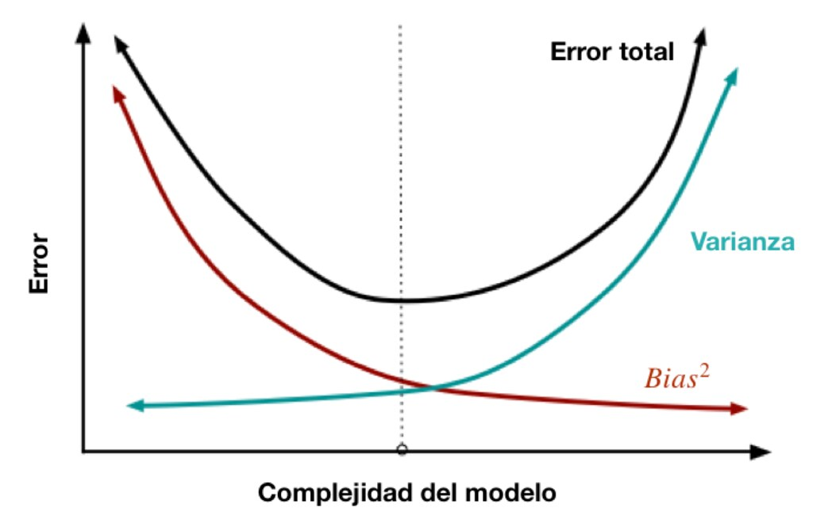
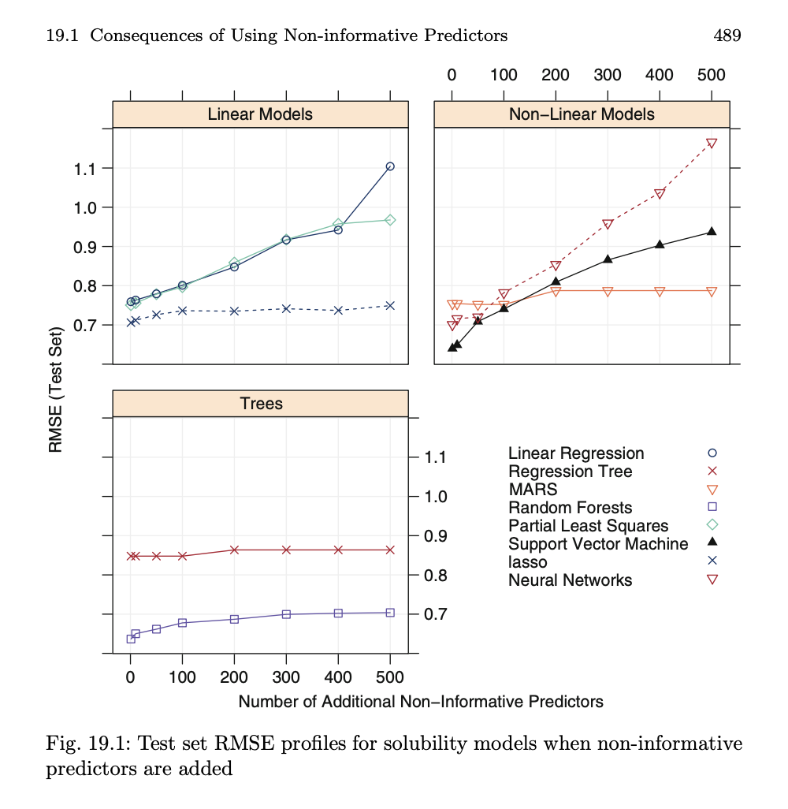

df_lasso <- arrow::read_parquet("data/df_lasso.parquet")6. Regresión Lasso
Regresión Lasso
librar(tidymodels)
lm_model <-
linear_reg() |>
set_engine("lm")
lm_results <- lm_model |>
fit(Y ~ ., data = df_lasso)
lm_results |>
tidy() |>
view()
lm_results |> glance()Split data
set.seed(0122025)
datos_divididos <- initial_split(df_lasso, prop = 0.8, strata = "Y")
datos_entrenamiento <- training(datos_divididos)
datos_prueba <- testing(datos_divididos)Estimar el modelo utilizando la base de entrenamiento
fit_entrenamiento <- lm_model |>
fit(Y ~ ., data = datos_entrenamiento)
fit_entrenamiento |> glance()¿De dónde proviene el error?

Sesgo y varianza
Estos dos conceptos son cruciales para entender el equilibrio entre la complejidad del modelo y su capacidad para generalizar a nuevos datos.
Sesgo (Bias): a. Definición: El sesgo es la diferencia entre la predicción promedio de nuestro modelo y el valor verdadero que intentamos predecir.El sesgo, en términos estadísticos, se refiere a la diferencia sistemática entre la esperanza (o promedio) de las estimaciones que produce un estimador y el valor real del parámetro que se desea estimar. Un modelo con alta varianza es muy sensible a pequeñas variaciones en los datos de entrenamiento, lo que puede resultar en un sobreajuste. Es decir, el modelo se ajusta muy bien a los datos de entrenamiento, pero tiene un rendimiento deficiente en datos no vistos o de prueba.
- Ejemplo: Un modelo de regresión lineal simple podría tener un alto sesgo si los datos reales tienen una relación no lineal.
- Implicaciones: Un modelo con alto sesgo es demasiado simple y no captura la estructura subyacente de los datos. Esto conduce a un bajo rendimiento en el conjunto de entrenamiento y prueba.
Varianza (Variance): a. Definición: La varianza es la cantidad de variabilidad en las predicciones del modelo para un punto de datos dado. b. Ejemplo: Un modelo de árbol de decisión muy profundo podría tener alta varianza, ya que es muy sensible a pequeñas variaciones en los datos de entrenamiento. c. Implicaciones: Un modelo con alta varianza tiende a sobreajustarse a los datos de entrenamiento, lo que resulta en un buen rendimiento en el conjunto de entrenamiento pero un bajo rendimiento en el conjunto de prueba.
El objetivo en Machine Learning es equilibrar el sesgo y la varianza para minimizar el error de predicción general en el modelo
- Objetivo: Encontrar un equilibrio entre sesgo y varianza que minimice el error total de predicción.
- Estrategias: Seleccionar un modelo con la complejidad adecuada, usar técnicas de regularización, y validar el modelo con conjuntos de datos de entrenamiento y prueba separados.
Formas de disminur el sesgo
Aumentar la complejidad del modelo: Un modelo más complejo puede capturar mejor la estructura subyacente de los datos. Por ejemplo, en lugar de utilizar una regresión lineal simple, podrías probar una regresión polinomial o un modelo de árbol de decisión.
Añadir más variables: A veces, el sesgo puede ser el resultado de no tener en cuenta variables importantes que influyen en la variable objetivo. Añadir más variables relevantes puede ayudar a reducir el sesgo del modelo.
Utilizar técnicas de “ingeniería de predictores”: Transformar o combinar las variables existentes para crear nuevas características puede ayudar a capturar mejor la relación entre las variables de entrada y salida. Por ejemplo, si estás trabajando en un problema de predicción de precios de viviendas, podrías crear una nueva característica que represente la relación entre el tamaño de la casa y el número de habitaciones.
Aumentar el tamaño del conjunto de datos: Si tu conjunto de datos es pequeño o no es representativo de la población general, es posible que el modelo tenga un sesgo alto. Aumentar el tamaño del conjunto de datos y asegurarte de que es representativo puede ayudar a reducir el sesgo.
Utilizar ensembles de modelos: Combinar varios modelos en un ensemble puede ayudar a reducir el sesgo, ya que cada modelo puede capturar diferentes aspectos de la relación entre las variables de entrada y salida. Por ejemplo, puedes utilizar métodos de ensemble como Bagging, Boosting o Stacking.
Técnicas para reducir la varianza
Reducir la complejidad del modelo: Un modelo más simple tiende a tener una menor varianza y es menos propenso al sobreajuste. Por ejemplo, podrías limitar la profundidad de un árbol de decisión.
Utilizar regularización: La regularización es una técnica que añade una penalización a los coeficientes del modelo para evitar que se ajusten demasiado a los datos de entrenamiento.Por ejemplo, regularización L1 (Lasso) y L2 (Ridge).
Aumentar el tamaño del conjunto de datos: Si dispones de más datos, el modelo será menos sensible a pequeñas variaciones en los datos de entrenamiento y tendrá una menor varianza.
Eliminar características ruidosas: Si tu modelo incluye características que no están relacionadas con la variable objetivo o que contienen mucho ruido, estas pueden aumentar la varianza del modelo. Realizar un análisis de importancia de características y eliminar las características poco importantes puede ayudar a reducir la varianza.

Validación cruzada (cross-validation): Utilizar la validación cruzada, como k-fold cross-validation, te permite evaluar el rendimiento del modelo en diferentes subconjuntos del conjunto de datos de entrenamiento. Esto puede ayudarte a identificar si el modelo está sobreajustando los datos y ajustar la complejidad del modelo en consecuencia.
Utilizar diferentes modelos: Combinar varios modelos en un ensemble puede ayudar a reducir la varianza, ya que la variabilidad de cada modelo individual se promedia. Por ejemplo, puedes utilizar métodos de ensemble como Bagging (Bootstrap Aggregating) o Random Forest, que promedian las predicciones de múltiples árboles de decisión entrenados en subconjuntos aleatorios de los datos.
Regularización (lasso-ridge)
El primer paso es especificar el modelo
spec_lasso <-
linear_reg(penalty = 0.5, mixture = 1) |>
# En glmnet, mixture = 1 es un modelo lasso. Mixture = 0 es ridge regression.
set_engine("glmnet") |>
set_mode("regression")
spec_lasso |> translate()lasso_fit <-
spec_lasso |>
fit(Y ~ ., data = datos_entrenamiento)
library(vip)
vip(lasso_fit)Pero, ¿por qué elegimos esa penalidad? Podemos usar cross-validation para tener algo de información sobre los hiperparámetros que nos dan mejor rendimiento en los datos de prueba.
tuned_spec <-
linear_reg(penalty = tune(), mixture = 1) |>
set_mode("regression") |>
set_engine("glmnet")
lambda_grid <- grid_regular(penalty(range = c(-10, 10)), levels = 20)set.seed(0122025)
folds <-
vfold_cv(datos_entrenamiento, v = 5, strata = "Y")
future::plan(multisession, workers = 4)
lasso_grid <- tune_grid(
tuned_spec,
Y ~ .,
resamples = folds,
metrics = metric_set(rmse, rsq, mae),
grid = lambda_grid
)
future::plan(sequential)show_best(lasso_grid, metric = "rsq")
best <- select_best(lasso_grid, metric = "rsq")final_lasso <- finalize_model(
tuned_spec, best
)last_fit(final_lasso, Y ~ ., split = datos_divididos) |> collect_metrics()library(vip)
final_lasso |>
fit(Y ~ ., data = datos_entrenamiento) |>
vi(lambda = best$penalty) |>
mutate(
Importance = abs(Importance),
Variable = fct_reorder(Variable, Importance)
) |>
head(20) |>
ggplot(aes(x = Importance, y = Variable, fill = Sign)) +
geom_col() +
scale_x_continuous(expand = c(0, 0)) +
labs(y = NULL) +
facet_wrap(~Sign, scales = "free_y") +
theme(legend.position = "none")